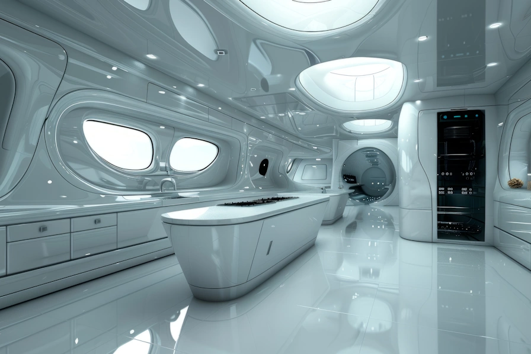

ANYTHING
YOU NEED,
AT YOUR
FINGERTIPS
AI ASSISTANT
While aboard EXO-accredited extended flights, you will be assigned an AI Assistant. Your AI assistant is a device that will take care of any of your physical needs. It can come in the form of a physical entity of your choosing, whether it be humanoid, house cat, robot, or anything else that you can imagine. Given your permission, your AI assistant will be given private, encrypted, and secure access to your personal data such that it can assume a personality of one that will complement your own.
WAYAI ASSISTANT
Your AI assistant can Remain in your unit, Follow you to your destination, Meet you at your destination, Much more..., The AI assistant may perform any duty or provide assistance with anything that you may not want to perform. Additionally, what the AI learns from your interactions may be transferred to your personal home network free of charge, or the AI can be purchased separately in the case that you wish to continue your interactions.
 LOCATIONWhatever you crave.
On EXO-accredited vessels, a vast assortment of dining options is available to you, tailored to meet your every craving. Whether you're in the mood for something familiar from Earth or eager to try cuisine inspired by the planets you'll be visiting, our culinary team is ready to serve. Every dish is prepared with the freshest ingredients, grown sustainably in our onboard biomes, ensuring both quality and variety throughout your journey.
 WAY
WAY
Whatever you crave.
Have specific dietary needs or preferences? With our customizable meal plan, you can easily select your desired foods, portion sizes, and meal times. At an average as low as of $8 USD* per meal, we offer an incredible deal on an incredible selection.
REQUIREMENTS
ENTERTAINMENT
Entertainment aboard EXO-accredited vessels is designed to keep you engaged and entertained throughout the entire journey. Our ships are equipped with immersive virtual reality suites, allowing you to experience everything from exploring alien landscapes to enjoying virtual concerts and movies in stunning detail. For more social activities, our zero-gravity recreation rooms offer unique games and experiences that can only be enjoyed in space. Whether you're into interactive storytelling, competitive gaming, or simply want to relax with a good book in our digital library, there’s always something to keep you entertained while traveling.
WAYEXERCISE
Maintaining physical health on your journey is essential, especially given the ship's internal gravity is set to the gravity level of the destination planet. These gravity levels means that regular exercise isn't just recommended — it's crucial for keeping your muscles and bones strong. To support your wellness, you'll have access to your very own personal trainer and a workout plan custom-tailored to your needs. Our advanced systems analyze your body and physical requirements, ensuring that every exercise session is of adequate intensity and keeps you in peak condition for life on new worlds. Participation in exercise activity may be waived*
WAYCRYO SLEEP
EXO offers a modern, safe, and luxurious industry-leading approach to interplanetary travel. Thanks to our integration of the revolutionary Murphy Accelerator, you can now reach even the most distant destinations, like Europa, in just two months. Due to the immense energy and maintenance required to cross such vast distances so quickly, EXO only offers one-way trips. For those who prefer to bypass the journey altogether, our Extended Sleep Modules are available at a reduced charge, ensuring that passengers feel as though they've arrived in the blink of an eye, waking up ready to begin their adventure.